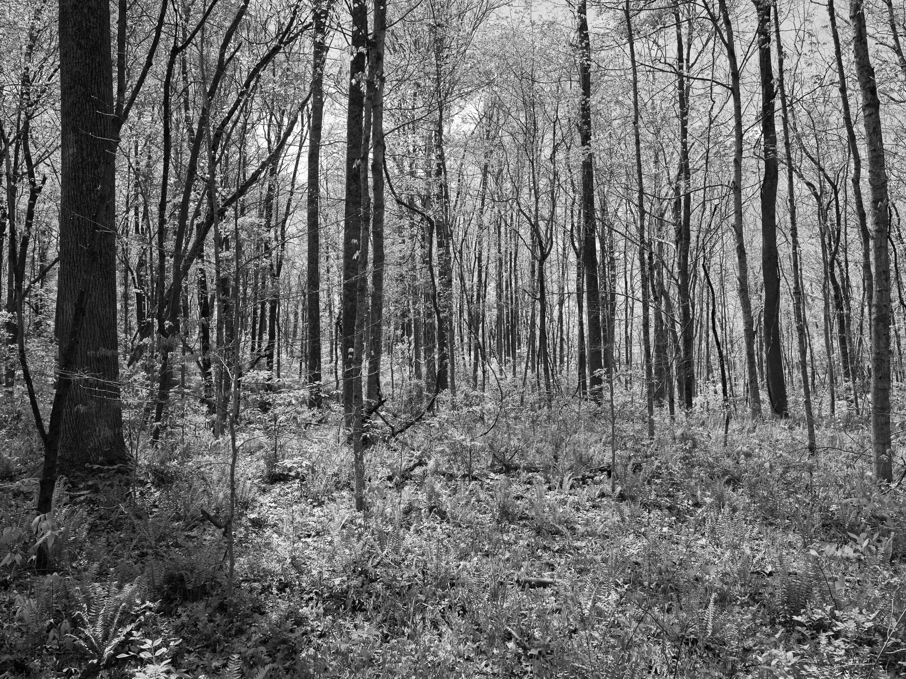
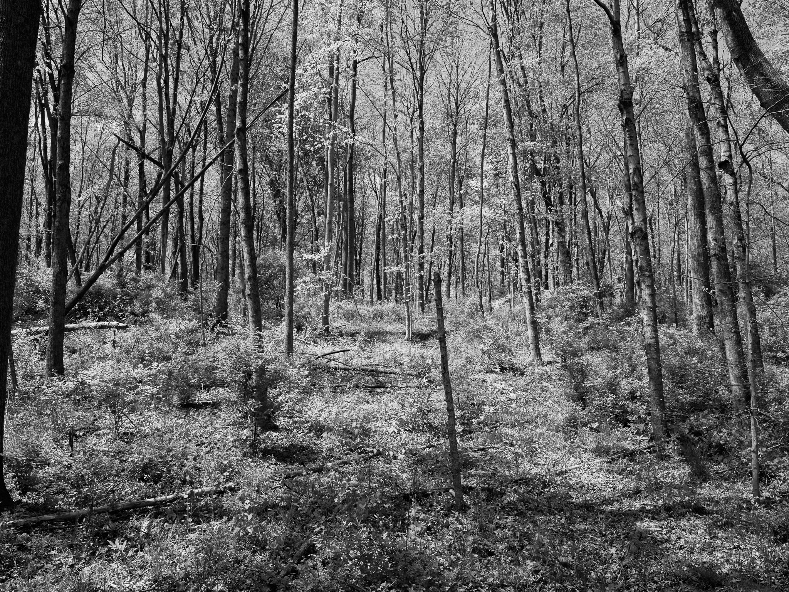
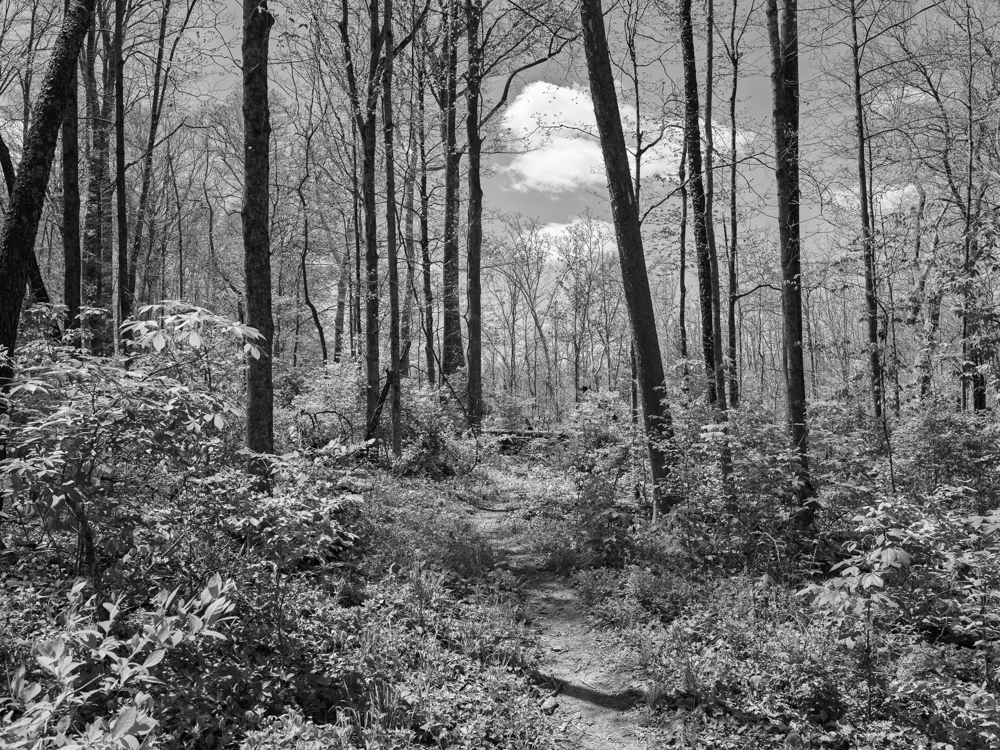
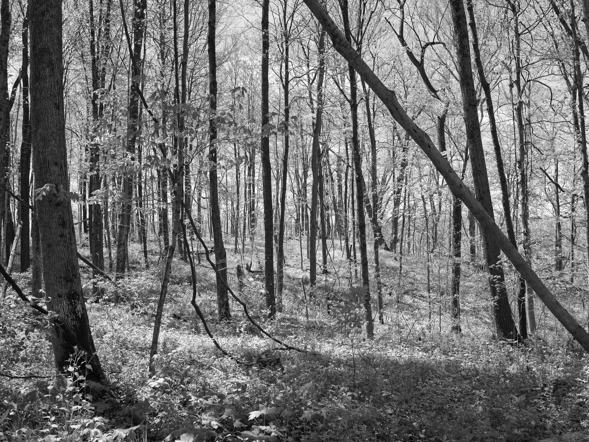
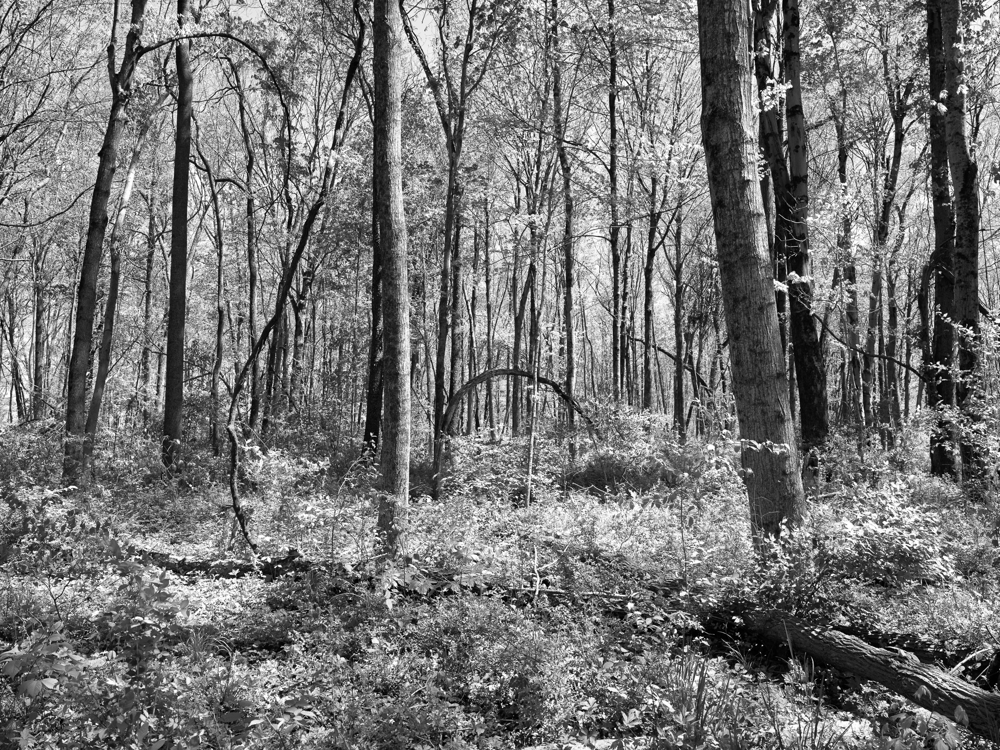

Public Lands Institute
Map
Archive
About
Rocky Fork State Park
OH

Rocky Fork State Park 1 · 2026-04-20
_DSF1473.jpg

Rocky Fork State Park 2 · 2026-04-20
_DSF1479.jpg

Rocky Fork State Park 3 · 2026-04-20
_DSF1480.jpg

Rocky Fork State Park 4 · 2026-04-20
_DSF1482.jpg

Rocky Fork State Park 5 · 2026-04-20
_DSF1483.jpg
View all 5 images
← Seip Earthworks
Hopewell Culture National Historical Park →